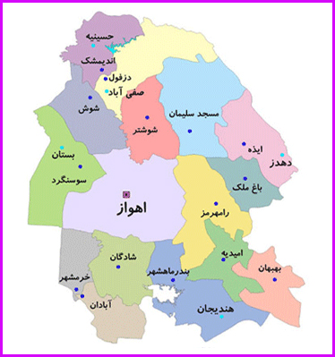

استان خوزستان استانی در جنوب غربی ایران است، که در کرانه خلیج فارس قرار دارد و مرکز تولید نفت و گاز ایران بهشمار میآید. مساحت استان خوزستان ۶۴٫۰۵۷ کیلومتر مربع است و با جمعیتی معادل ۴٫۷۱۰٫۵۰۶ نفر (۱۳۹۵)، بهعنوان پنجمین استان پرجمعیت ایران محسوب میشود. شهر اهواز مرکز استان خوزستان است.
از لحاظ تاریخی، خوزستان قدیمیترین منطقه فلات ایران محسوب میشود، که پیشینه سکونت انسان در آن به ۲۷۰۰ سال پیش از میلاد مسیح و شکلگیری تمدن ایلام در هزاره سوم قبل از میلاد، بازمیگردد. خوزستان از شمال به استان لرستان، و شرق به استان چهارمحال و بختیاری واصفهان، از شمالغربی به استان ایلام، از شرق و جنوبشرقی به استان کهگیلویه و بویراحمد، از جنوب به استان بوشهر و خلیج فارس و از غرب به کشور عراق محدود میشود.
استان خوزستان هماکنون دارای ۱۸ نماینده در مجلس شورای اسلامی و ۶ نماینده در مجلس خبرگان رهبری میباشد. شرکت توسعه نیشکر و صنایع جانبی،شرکت ملی مناطق نفتخیز جنوب (بزرگترین تولیدکننده نفت ایران)، شرکت ملی حفاری ایران، شرکت فولاد خوزستان و شرکت نفت و گاز اروندان در استان خوزستان مستقر میباشند.
در عکس زیر شهرهای این استان به تفکیک مشخص شده اند.
